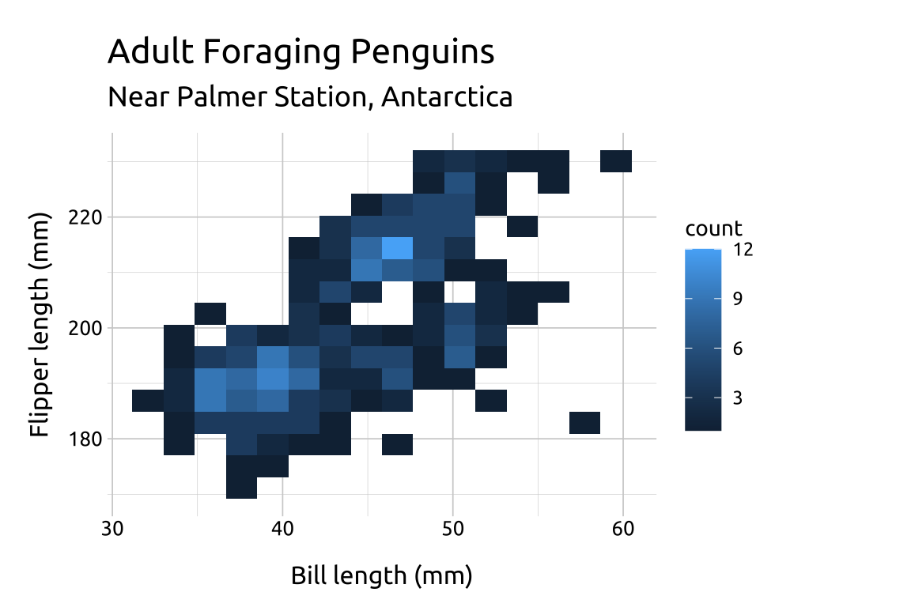
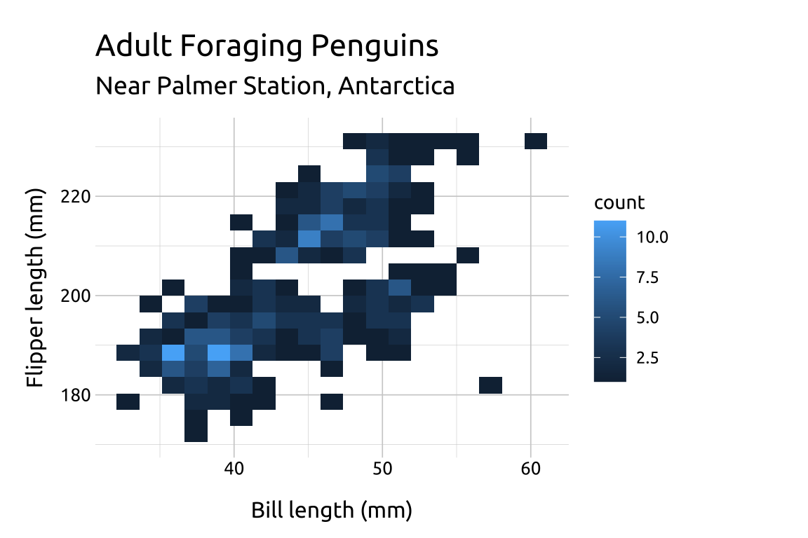
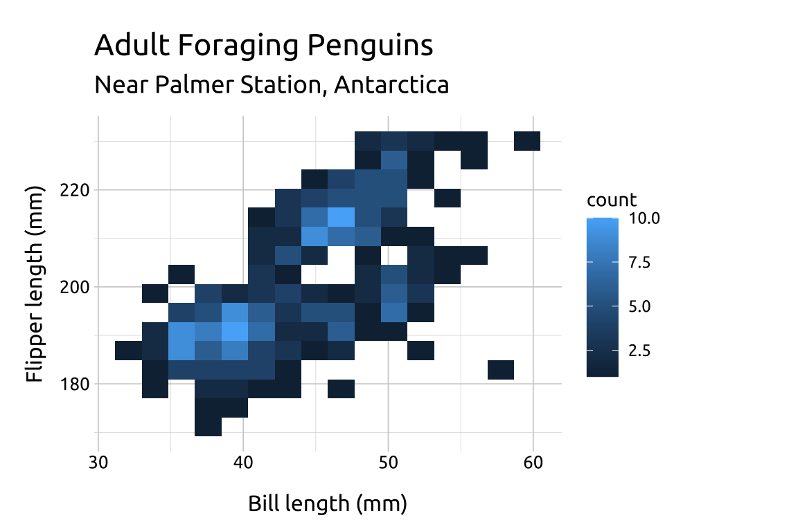
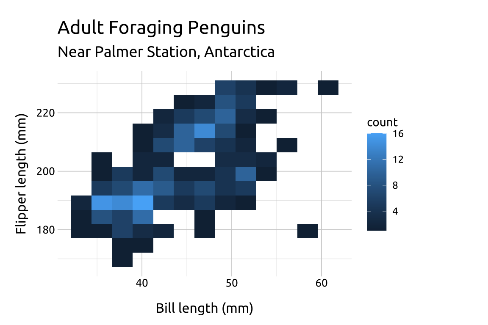
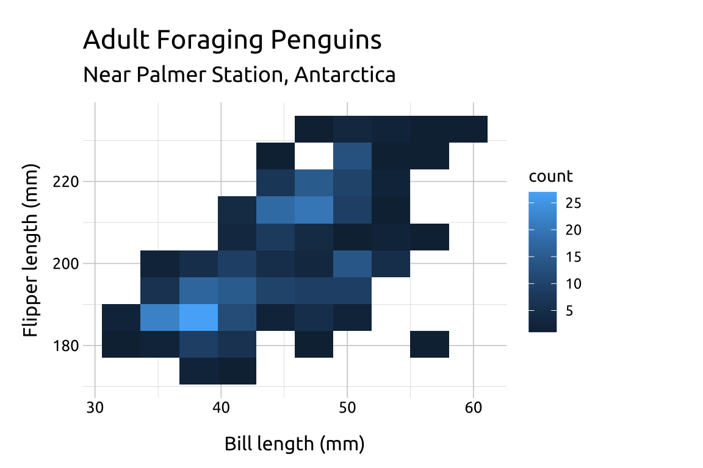
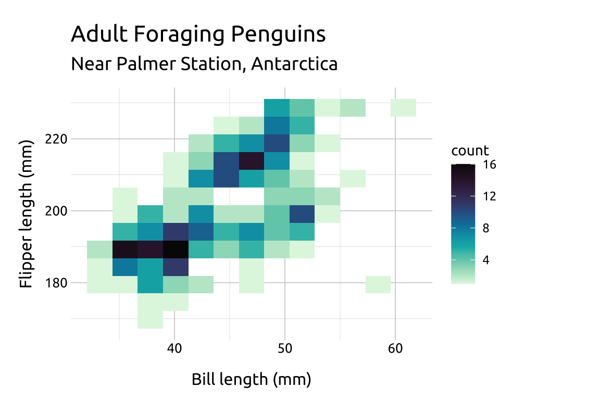
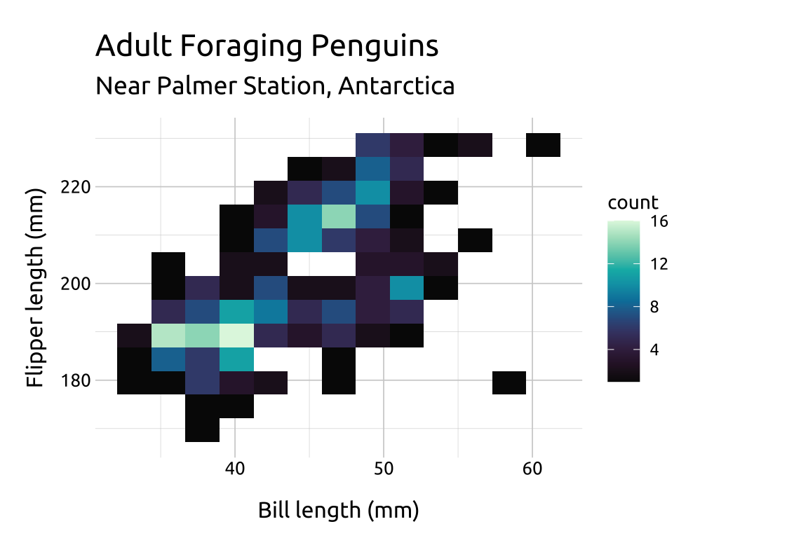
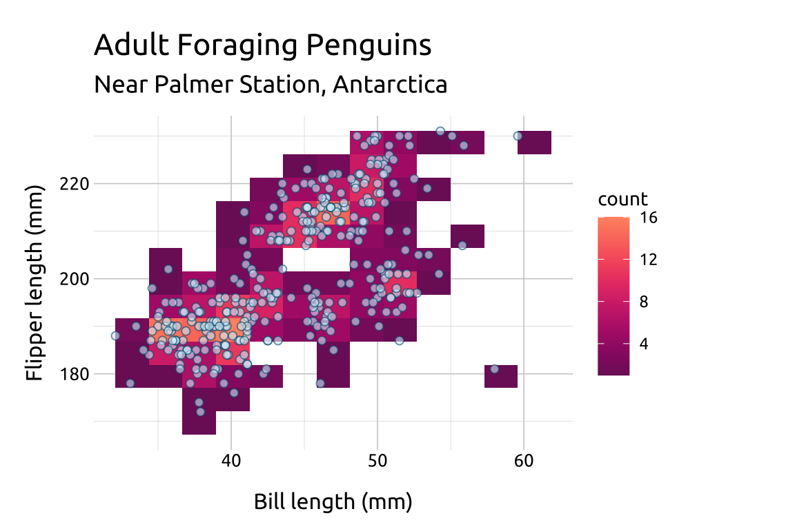

41 2D histograms
41.1 Description
Standard histograms separate a variable’s values into discrete groups, or ‘bins,’ which are arranged in increasing order across the x axis. The y axis displays the frequency (or count) of values within each bin.
Vertical bars capture the variable’s distribution using the height of the bar to represent the number of values per ‘bin’, and the number of bars corresponds with the bin value (or ‘bin-width’).
When we extend this display to two numerical/quantitative variables, the bins are used to divide the total graph area into a grid, and color is used to display the variation in frequency (or count) of both variable values that fall within each intersecting square.
41.2 Set up
PACKAGES:
Install packages.
show/hide
install.packages("palmerpenguins")
library(palmerpenguins)
library(ggplot2)DATA:

We’ll take the flipper_length_mm, bill_length_mm, and species variables from palmerpenguins::penguins and drop the missing values.
show/hide
penguins_2dhist <- palmerpenguins::penguins |>
dplyr::select(flipper_length_mm, bill_length_mm,
sex, species, body_mass_g) |>
tidyr::drop_na()
glimpse(penguins_2dhist)
#> Rows: 333
#> Columns: 5
#> $ flipper_length_mm <int> 181, 186, 195, 193, 19…
#> $ bill_length_mm <dbl> 39.1, 39.5, 40.3, 36.7…
#> $ sex <fct> male, female, female, …
#> $ species <fct> Adelie, Adelie, Adelie…
#> $ body_mass_g <int> 3750, 3800, 3250, 3450…41.3 Grammar
CODE:
Create labels with
labs()Initialize the graph with
ggplot()and providedataMap
bill_length_mmto thexandflipper_length_mmto theyAdd the
geom_bin2d()layer
show/hide
labs_2dhist <- labs(
title = "Adult Foraging Penguins",
subtitle = "Near Palmer Station, Antarctica",
x = "Bill length (mm)",
y = "Flipper length (mm)")
ggp2_2dhist <- ggplot(data = penguins_2dhist,
mapping = aes(x = bill_length_mm,
y = flipper_length_mm)) +
geom_bin2d(bins = 15)
ggp2_2dhist +
labs_2dhistGRAPH:

41.4 More info
41.4.1 Bins
The value for bins will be vary depending on the variable values–there is no correct number:
If the number of
binsis too low, the density may hide important nuances between the variables.If the number of
binsis too high, the noise might drown out the signal.Below we change the
binsto9,12and18to compare the display:
show/hide
ggp2_base <- ggplot(data = penguins_2dhist,
mapping = aes(x = bill_length_mm,
y = flipper_length_mm))
ggp2_2dhist_bins18 <- ggp2_base +
geom_bin2d(bins = 18)
ggp2_2dhist_bins12 <- ggp2_base +
geom_bin2d(bins = 12)
ggp2_2dhist_bins9 <- ggp2_base +
geom_bin2d(bins = 9)
ggp2_2dhist_bins18 +
labs_2dhist
ggp2_2dhist +
labs_2dhist
ggp2_2dhist_bins12 +
labs_2dhist
ggp2_2dhist_bins9 +
labs_2dhist



41.4.2 Scale
scale_fill_continuous_sequential() comes with a variety of palettes to choose from (run hcl_palettes(type = "sequential") to view the full list).
We can also reverse the order of the fill color scale with rev (TRUE or FALSE).
show/hide
ggp2_2dhist_bins12 +
scale_fill_continuous_sequential(
palette = "Mako",
rev = TRUE) +
labs_2dhist
ggp2_2dhist_bins12 +
scale_fill_continuous_sequential(
palette = "Mako",
rev = FALSE) +
labs_2dhist 

41.4.3 Options
If you set the point shape to 21, you have control over both color and fill.
In the previous example we showed how to reverse the color scale for the palette in scale_fill_continuous_sequential().
Below we reverse the color scale, but also manually set which colors on the scale we want to
beginwith (i.e., smallest data value) and which color we want toendwith (i.e., the largest data value). Possible values range from0-1.We also add a
geom_point()layer.
show/hide
ggp2_2dhist_bins12 +
scale_fill_continuous_sequential(
palette = "SunsetDark",
rev = TRUE,
begin = 1.0,
end = 0.3) +
geom_point(
fill = "#D4F0FC",
color = "#02577A",
shape = 21,
size = 1.8,
alpha = 0.60) +
labs_2dhist 